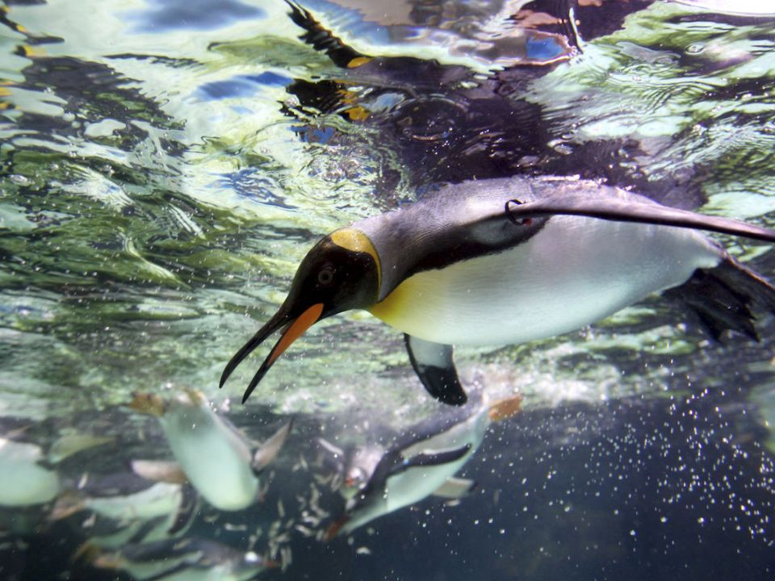

pinguino
Los pingüinos son una familia de aves, la única del orden Sphenisciformes. Son aves marinas, no voladoras, que se distribuyen casi exclusivamente en el hemisferio sur, exceptuando el pingüino de las islas Galápagos.